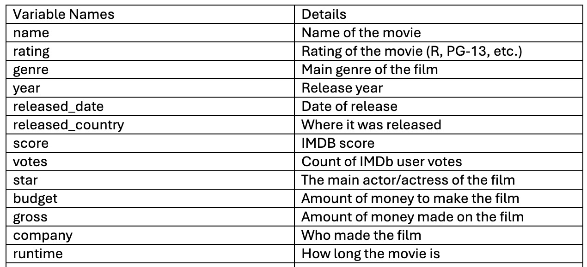

The movie industry has been a source of entertainment for decades. With American cinema starting in 1894 and transitioning from black and white and silent films to the 70’s and 80’s introducing Sci-Fi like Star Wars and Action like Top Gun, the movie industry has been engrained in American society for over 100 years. It is a means of coming together and pop culture not just in the United States, but globally. We saw this when the world came together to watch Barbie and Oppenheimer this past summer. However, as things ebb and flow, popularity of movies, and of the movie industry in general, fluctuates. We saw this through the downward in-person viewership of COVID-19 and back up again through this summer’s “Barbenheimer” phenomenon. The big thing we want to focus on is the popularity of movies and the movie industry. Is the industry dying? Are movies less watched or more watched? Are there specific actors that draw in the audience? Does the revenue and the finding help the popularity of the movie? We analyzed movie industry popularity through a variety of metrics from our dataset we obtained from Kaggle. We look at three topics, popularity, revenue, and time to perform analysis on the data to show our findings in our topics of focus and their effect on the data.
The dataset we have chosen is called “Movie Industry” and is from the website Kaggle.com. The dataset was created by Daniel Grijalva as a means of analyzing the movie industry over the past four decades. In order to load this dataset, we will download the file as a CSV file and load it into Python (likely Jupyter Notebooks) using Pandas. The dataset has 15 columns (name, rating, genre, year, released, score, votes, director, writer, star, country, budget, gross, company, and runtime) and 7,512 unique rows each representing a movie. The various fields represented in the dataset will help us to understand how different metrics affect the popularity of movies. In this dataset the popularity of a movie can be measured with the IMDB score, IMDB votes count, and the gross of the movie compared to its budget. Overall, the dataset is clean with most fields not having null values.
This D3 graph is representative of the overall dataset. It shows the entirety of the time on the x-axis (1980-2020) and the number of movies released on the y-axis. It shows the trends of movie watching over time, with dips and rises in viewership. It shows how the movie industry has performed over time, which helped contextualize the dataset and helps us answer some of our project questions such as is the movie industry dying? As we can see, the movie industry has significant rises and falls but the overall viewership has been on a steady incline until 2020 stopped the in-person viewership because of the COVID-19 Pandemic.

This graph displays the frequency of genres over decades. Similarly to the last one it breaks up the data by ten year increments and shows the frequency of each genre through time. As we can see the comedy genre has significantly decreased in frequency after 2000, and as a result, is less represented in the later decades as well. Note that 2020 is the last year in the data and therefore not a decade, so all of them decline going into 2020.

This graph shows the breakdown of the proportion of movies by genre in each decade in the dataset (1980’s, 1990’s, 2000’s, and 2020). It gives a very clear breakdown of all of the genres to see a more holistic view of the data. We can see drama, comedy, or action films are the majority in most of the decades.
This map depicts the amount of gross profit made by all movies in each country around the world. The darkness of the red correlates with the amount of gross profit, with darkest red being the most amount of profit. Countries like the US, China, and Japan appear to have the highest amount of gross profit, while a lot of countries in Africa and in the Middle East do not have enough data to show a profit for movies. This graph can help us answer where the movie industry may be thriving around the world and add to the holistic exploration of this dataset.
This graph represents the top 10 Stars in the dataset who have earned the most average gross profit. This serves as another graph to show the overall view of the data to contextualize our project. It categorizes the highest earning stars, while also giving insight into who they are. We found that nine out of the ten stars on this list are men, with the only woman being Daisy Ridley. It was very insightful to see where the movie industry has been over time and where sadly it continues to be as of now. There has been an increase in female led movies and TV shows in the recent year and after this summer with the release of Barbie we are hoping more movies and shows in the future will have equal viewership and pay for male and female actors.
This is an interactive scatterplot that shows movie budget over time. Each point represents a single movie, and the color denotes the rating of the movie. Hovering over each point allows the user to see the IMDB score and name of the specific movie. There is also a slider bar that allows the user to set a certain IMDB score cutoff, so only movies with the selected score or greater will be shown. As shown in the graph, movie budgets have increased greatly over time which is to be expected. Furthermore, movies tend to have higher IMDB scores in more recent years. This could be due to the rising popularity if IMDB as a metric, as well as recency bias towards new movies.
This is an interactive graph that breaks down the average movie votes over time. It can help see the amount of engagement from the public using IMDB votes to voice their opinion on the movies they have seen. You can choose to see all of the movie votes overlayed on top of each other for an overall comparison or can chose to use the interactive drop-down menu which allows you to see average movie votes by Rating.
In conclusion, we noticed that although the movie industry has changed over the decades in terms of new trends and styles, the industry is still strong and has been on an uphill climb since 2020. In 2020, movie production companies were temporarily restricted in their work due to the ongoing COVID-19 pandemic. This resulted in a decrease in the number of movies being produced around the world. In addition, streaming companies, like Netflix and Disney+, began to grow in popularity as movie theaters were experiencing ongoing health restrictions due to the pandemic. However, the rising popularity of streaming services did not largely affect the movie industry as a whole; instead, it changed the way audiences prefer to watch movies. We can see this demonstrated through the pattern of linearly increasing budgets for movies being produced over the decades, with movies made in 2020 having higher budgets than ever before. This tells us that the demand for movies is still high, and now that COVID-19 restrictions are mostly lifted, we can predict that the demand is still growing. Furthermore, although trends in the movie industry have shifted over the years (such as frequency/proportion of genres), these changes do not suggest that the industry itself is doing worse. Genres like comedy were popular in the 80s, 90s, and 2000s, but genres like action are popular now. Therefore, we can conclude by saying that the movie industry has changed, but the industry is still alive and well.